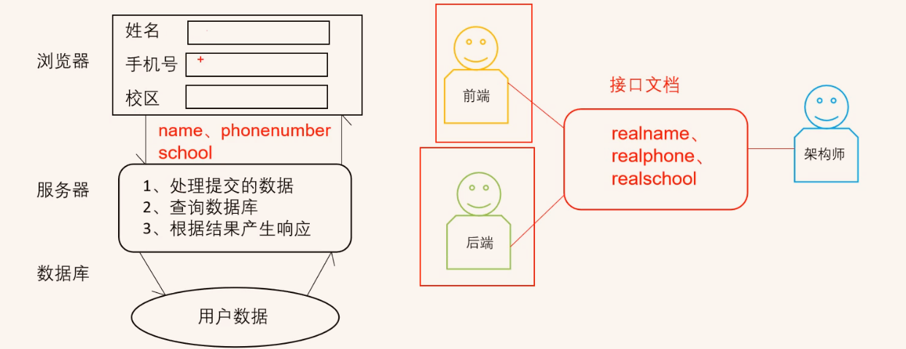
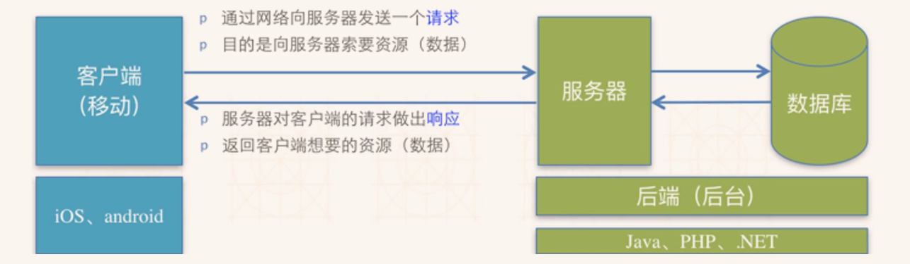
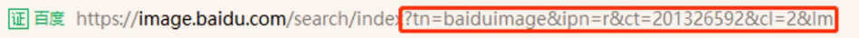
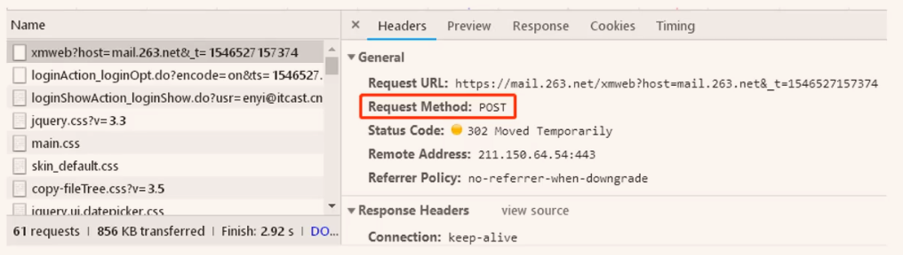

https://www.bilibili.com/video/BV1LJ41137b5?p=2&spm_id_from=pageDriver
1. 接口的定义
1.1 现实中的接口
1.定义：程序之间协作索要遵循的一套规范、标准
1.2 优点
1.责任划分清晰
2.缩短研发周期
3.可拓展性强
1.3 API接口
https://www.bilibili.com/video/BV1LJ41137b5?p=4&spm_id_from=pageDriver
1.应用程序编程接口(API: Application Programming Interface,应用程序编程接口) :以HTTP协议形式提供,定义了输入、输出、功能描述的服务。

2.接口文档是规则（自）
2. 接口测试流程
1.接口的功能测试（先要保证接口是正确的）
2.测试接口的数据，传递一些特殊的数据，保证接口没问题
3.自动化测试脚本的编辑
4.接口的性能，压力测试
（我只是想学怎么用接口，怎么就测试了呢？）
3. 网络编程基本概念
1.客户端(Client) :移动应用(IOS,Android,Web等应用)
2.服务器(Server) :为客户端提供服务、提供数据、提供资源等机器
3.请求(Request) :客户端向服务器索取数据的一种行为
4.响应(Response) :服务器对客户端对请求做出的反应,一般指返回数据给客户端

3.2 HTTP协议
1. HTTP协议概念
协议:计算机通信网络中两台计算机之前进行通信所必须共同遵守的规则或规定。
HTTP协议:超文本传输协议,是一种规定了浏览器和服务器之间通信的规则
2. URL
统一资源定位符
概念:互联网上资源的地址、位置。每一个资源都有一个唯一的URL
格式:协议://主机地址/路径
3. GET、POST请求
1.get：
提交的数据显示在地址栏,不安全;提交的数据量有限制;不重要的数据使用GET
- 浏览器不同，数量的限制也不同

2.post：
隐式提交数据,更安全;没有数据量大小的限制;重要数据使用POST

4. 数据传递格式
1.键值对：?xx=11&xx=22
视频里面说，问号后面是 传递的数据，前面是网络地址；
https://www.bilibili.com/video/BV1LJ41137b5?p=9&spm_id_from=pageDriver
01:17
&，是 and
2.JSON数据：
1 | { |
5. 状态码
1.HTTP协议之常见响应状态码
- 状态码由三分数字组成，第一位数字定义了响应类型，有5中可能取值
1xx:指示信息一表示请求已接收,继续处理。
2xx:成功一表示请求已被成功接收、理解、接受。
3xx:重定向-要完成请求必须进行更进一步的操作。
4xx:客户端错误-请求有语法错误或请求无法实现。
5xx:服务器端错误一服务器未能实现合法的请求。
2.
6. restful风格
1.按照一定的规则写出的易读、易懂的api文档；目的是让前端、后端、测试三方在工作的时候有据可循，提升开发和测试的效率(非强制要求,软要求)。
- 不是必须这么风格；
2.增删改查四大功能的语法风格：
查
方法：get
响应码：200 + 查询的数据
响应码不止给个码，还把查询的数据也给出来，所以需要get，因为能看到
增
- 方法：post
- 响应码：201 + 新增的数据
改
- 方法：put[^2]
- 响应码：200或201 + 修改后的数据
删
- 方法：delete[^1]
- 响应码：204 + 无；
X. 题注
[^1]:delete 英 [dɪˈliːt] 美 [dɪˈliːt]
v.删去;删除
[^2]:put 英 [pʊt] 美 [pʊt]
v.放;安置;猛推;用力插入;将…送往;使…前往
本周工作汇报
1.完成宁夏会计手机端专题
- PC端；
2.完成宁夏酒店管理PC端专题
- 和手机端；
3.编写宁夏电气运行与控制专题PC与手机端
下周工作
1.完成宁夏电气运行与控制专题PC与手机端
2.学习